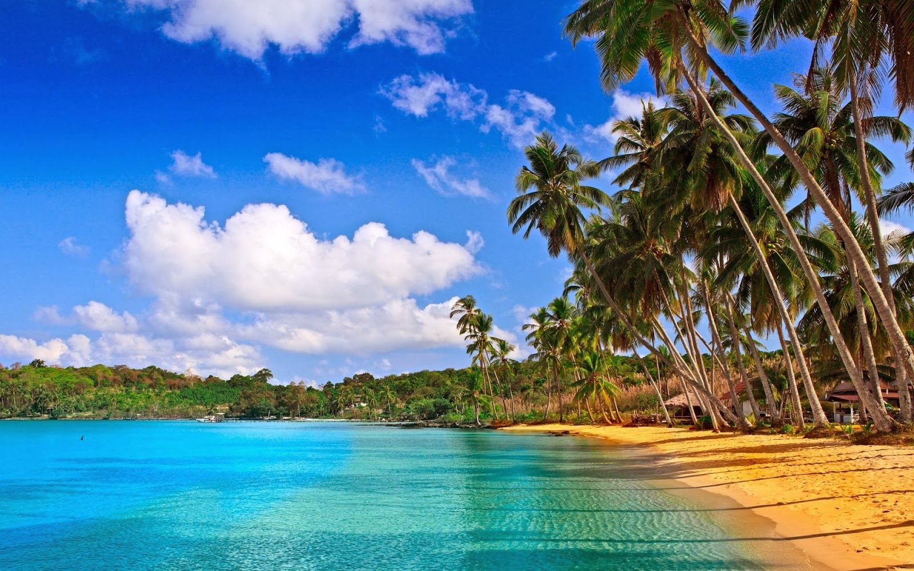
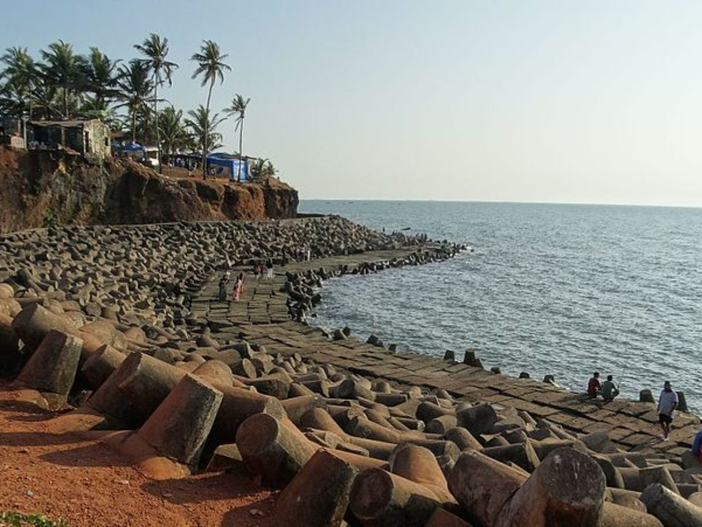
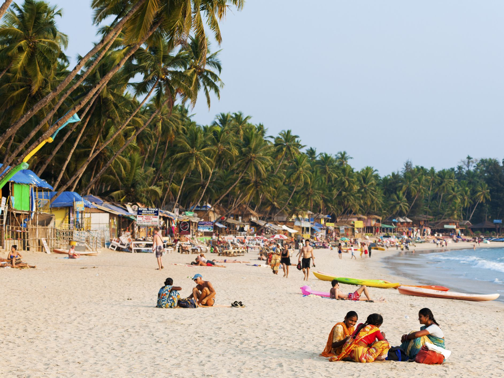
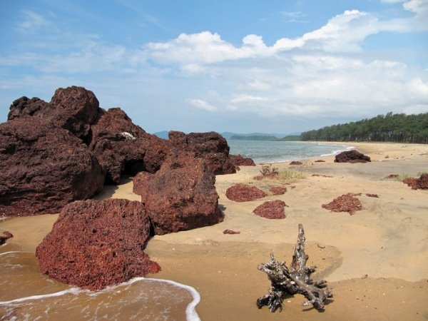
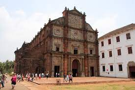
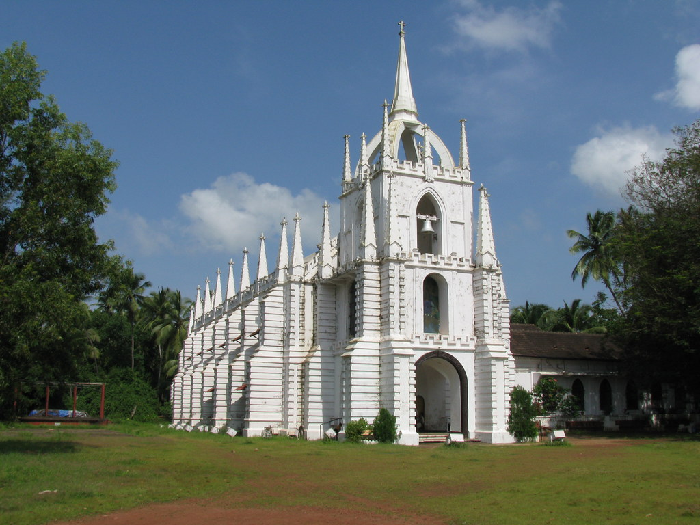
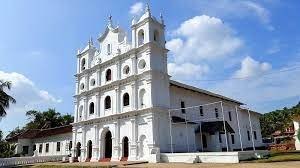
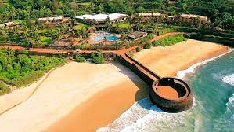
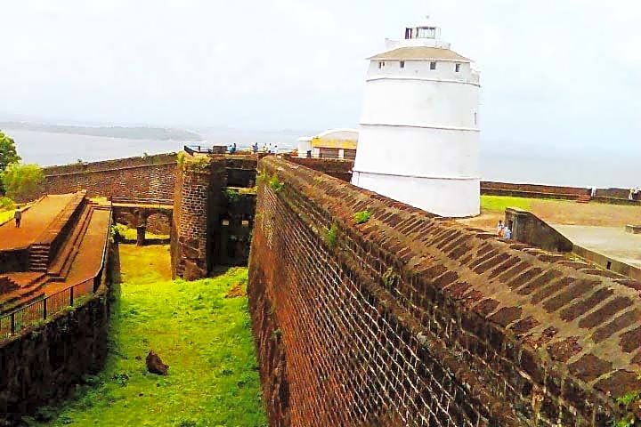
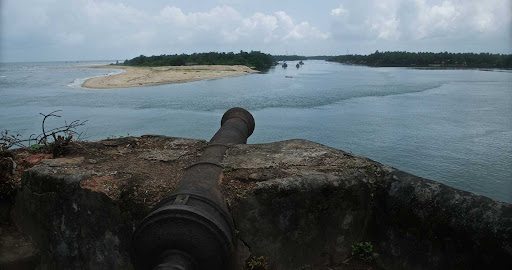

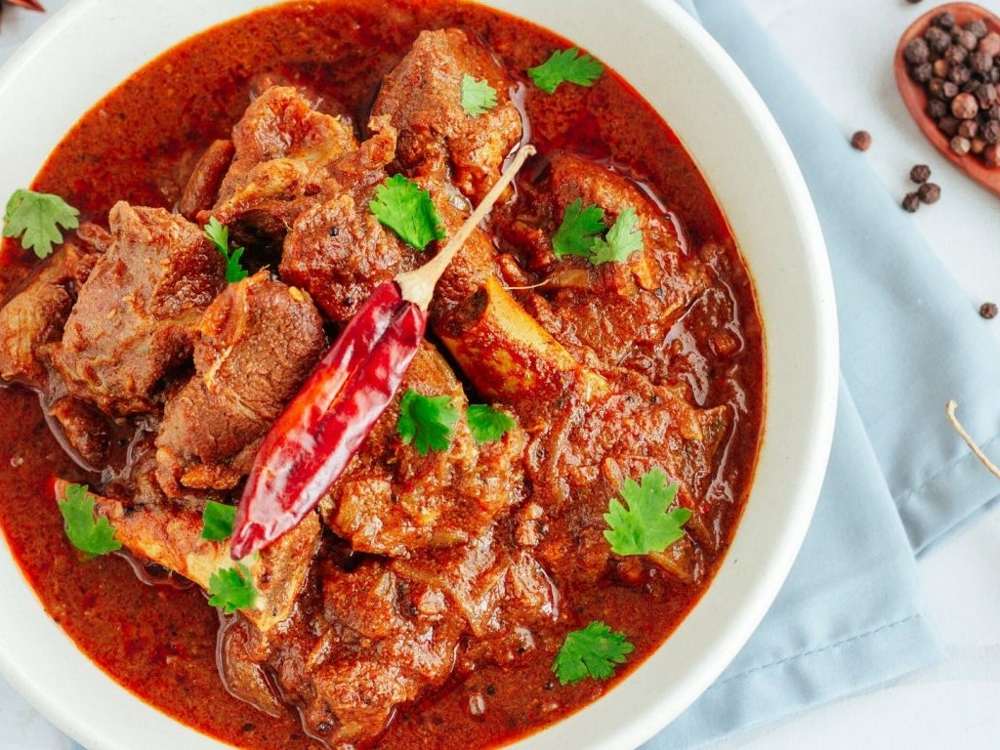
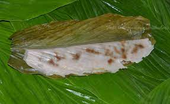

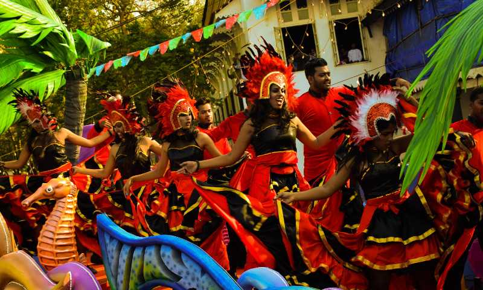
PALOLEM BEACH
Palolem Beach is situated in Canacona in southern Goa, India. The beach attracts many international tourists, mainly during the winter season between November and March. It is considered to be one of the region's most beautiful beaches.Palolem Beach is largely unspoiled and is inhabited by both local fishermen and by foreign tourists who live in shacks along the shore or in the main village itself. It is about one mile (approximately 1.61 km) long and is crescent-shaped; one can view the entire beach from either end. Both ends of the beach consist of rocks jutting out into the sea.
GALGIBAGA BEACH
Galgibaga Beach also called Galgibagh Beach is a beach in south Goa. It is one of the lesser-known and cleanest beaches of India. It located in the south of Goa in Canacona region, 7 km from famous Palolem Beach. Galgibaga beach is reported to be a nesting ground for Olive Ridley turtles.
CHURCHES
BASILICA OF BOM JESUS
The Basilica of Bom Jesus (Portuguese: Basílica do Bom Jesus; Konkani: Borea Jezuchi Bajilika) is a Roman Catholic basilica located in the Goa state, situated in the Konkan region of India. It is both a pilgrimage centre and also the most iconic monument of all the churches and convents of Goa, recognised by UNESCO as a World Heritage Site. The basilica is located in Old Goa, former capital of Portuguese India, and holds the mortal remains of St Francis Xavier.
MAL DE DEUS CHURCH
The Mae De Deus (Mother Of God) Church in Saligao, Bardez, Goa is one of the finest churches in India whose foundation was laid on 7 February 1867, but was inaugurated on 26th November 1873. Located at Daujim, Barduz taluka a tiny suburb of Old Goa in the 16th century, of which today only the tallest cross on a pedestal is seen among shrubs and coconut groves, one Salvador Pinto a resident of Saligao, took the initiative to have a separate church built along with a separate parish. Before the construction of this church, the Saligao Catholics were part of the parish church of the Holy Trinity at the neighboring village of Nagoa.
ST.DIOGO CHURCH
St. Diogo Church, Guirim, Goa is called ‘Sao Diogo Igreja em Guirim, Goa’ in Portuguese. The St. Diogo Church, Guirim, Goa is popularly called ‘The Guirim Church’ locally in Goa. The Guirim Church was founded in 1604 and catered to the villages of Guirim, Sangolda and the valley of Porvorim.
FORTS
SINQUERIM FORT
The Sinquerim Fort stands tall overlooking the Arabian sea and divides the shoreline into two equal parts. The fort was built in 1612 by the Portuguese to guard against the Dutch and the Marathas. It also provided as the reference point to the European vessels. The fort is erected on the beach south of Candolim.
CHAPORA FORT
Chapora Fort (Devanagari: शापोरा), located in Bardez, Goa, rises high above the Chapora River. The site was the location of a fort built by Muslim ruler Adil Shah called Shahpura, whose name the Portuguese altered to Chapora. It is now become a popular tourist spot and offers a view north across the Chapora river to Pernem, south over Vagator and also far out to the Arabian Sea in the West.The fort changed hands several times after Portuguese acquired Bradez. Trying to end the Portuguese rule in Goa, Prince Akbar joined his father's enemies, the Marathas in 1683 and made this place his base camp.[citation needed] It became the northern outpost of the Old Conquests. After the Portuguese recovered from an encounter with the Marathas, they strengthened their northern defenses and provided shelter to the people there.
BETUL FORT
Betul is a coastal town located in South Goa District, Goa, India. It is one hour distance from Margao. It is known for its beach. The Sal river drains into the Arabian sea near Betul. The place is also home to the Betul Fort .
FOOD
GOAN FISH CURRY
This fish curry comes to you by way of Goa, a little pocket of Indian paradise that’s all about the sun, surf, sand and excellent seafood! With a deeply aromatic tomato and coconut based sauce, Goan Fish Curry calls for a good handful of spices but once you start cooking, it’s done in 20 minutes.Of all the region’s dishes, along with Vindaloo perhaps one of the most well known is Goan Fish Curry. Pronounced go-an (as opposed to “groan” without the “r”!), it’s an aromatic curry with a blend of spices, garlic, ginger and onion along with fresh tomato and coconut. And unlike other popular Indian curries, such as everybody’s favourite Butter Chicken and Tikka Masala, Goan Fish Curry has a touch of tang to it which cuts through the richness of the sauce.
GOAN PORK VINALOO
This is a traditional recipe, very popular and embraced as their very own by the Catholic community of Goa, a state on India’s western coast.However, its origins lie 5,500 miles to the west, in Portugal. From there, an earlier variant of the dish made its way to Goa with Portuguese explorers in the early 15th century.Portuguese sailors used to preserve pork for their journey to India in garlic and vinegar. They used vinegar to preserve the meat not only on ship, but also in India’s hot climate. Many Goan dishes have the tang and tartness of white wine or palm vinegar.
PATOLEO
Patoleo (singular: Patoli; Goan Konkani: पातोळ्यो) are turmeric leaf stuffed leaf wrap, a dish which is mostly prepared on the western coast of India and other Indian Ocean islands. It is made of grated coconut, rice and jaggery, and cooked by wrapping and steaming in turmeric leaves.Konkani-speaking Hindus prepare Patoleo on the second Sunday of Shravan, on Nag Panchami and on Hartalika, the eve of Ganesh Chaturthi.Salt-free Patoleo, are offered to Goddess Parvati, who according to a legend, is said to have a strong craving for these sweets during her pregnancy.Served with leaves on, in a dish. They are mainly eaten after removing the leaf and are eaten with the vegetarian festive lunch during the Hindu festivals
LANGUAGE
KONKANI
Konkani(Kōṅkaṇī) is an Indo-Aryan language spoken by the Konkani people, primarily along the western coastal region (Konkan) of India. It is one of the 22 Scheduled languages mentioned in the 8th schedule of the Indian Constitution and the official language of the Indian state of Goa. The first Konkani inscription is dated 1187 A.D. It is a minority language in Karnataka, Maharashtra, Kerala ,Gujarat and Dadra and Nagar Haveli and Daman and Diu.
Konkani is a member of the Southern Indo-Aryan language group. It retains elements of Vedic structures and shows similarities with both Western and Eastern Indo-Aryan languages
LIFESTYLE AND CULTURE OF GOA
A small state on India's western coast, Goa has always benefitted as a trade centre because of its easily accessible ports. With a beautiful harmonization of the East and West, Goans have taken the best of both worlds. A civilization of warm, happy people, Goa sees a mix of different religions like Christians, Catholics, Muslims, and Hindus that live together in harmony. Following their age-old traditions and customs, Goan's celebrate all major festivals with fervour without bringing any religious barriers within the society.With a strong influence from the west, Goa has always had a more contemporary mindset. Their rich heritage culture has not been tarnished by the rapid industrialization that has become commonplace in the rest of India yet. Celebrating livelihood and religious festivals with scrumptious food and delightful music, the locals are humble, warm and fun-loving individuals.
BEST TIME TO VISIT GOA
The best time to visit Goa is between the middle of November to the middle of February. You will get mild weather and low humidity. The sea won’t be choppy, perfect for swimming and water sports. The daytime temperature will range between 20° and 32°C. Sometime, for 1-2 days every year in December, the daytime temperature goes down to around 20-22 degrees. The winter season is also the best time in Goa for parties, nightlife, and watersports.
BUDGET REQUIRED
Approx~ 14,912 INR(per person,1 week)
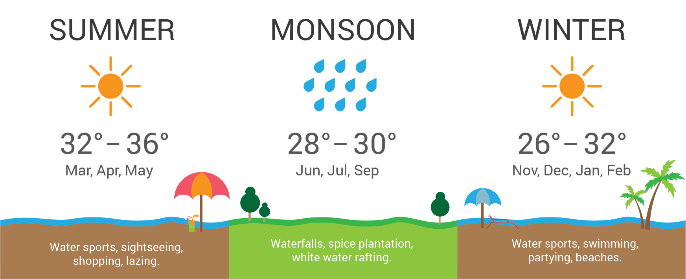